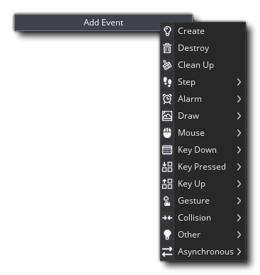
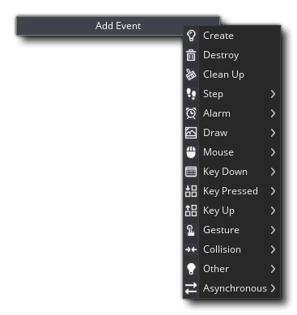

Con los recursos que has visto hasta ahora, puedes agregar algunas bonitas imágenes y sonidos al árbol de recursos del juego, ¡pero todavía no hacen nada en el juego! Para eso necesitamos el recurso más importante de GameMaker Studio 2, el recurso Object. Los objetos son un recurso especial que utilizamos para controlar aspectos de un juego y para hacer cosas específicas. La mayoría de las veces tienen un sprite asociado con ellos para que pueda verlos en las salas de juego, pero a veces se usan como un controlador "entre bastidores" para hacer cosas relacionadas con el usuario o para cronometrar, etc. Se les puede dar comportamientos y pueden reaccionar a ciertos eventos, así como a los demás, y la mayoría de las cosas que ves en un juego se basan en los objetos y sus interacciones.
Para crear un nuevo recurso de objeto, es lo mismo que para cualquier otro recurso y simplemente haga clic derecho  en la carpeta de recursos Objetos y seleccionando Crear.
en la carpeta de recursos Objetos y seleccionando Crear. 
Esta es la ventana del editor de objetos y muestra las propiedades actuales, y lo primero que debe hacer es nombrar el objeto, de nuevo usando un prefijo como "obj_" o algún otro identificador. En general, o un objeto para dibujar cualquier cosa y registrar colisiones con instancias de otros objetos, necesita tener un sprite que se agrega usando el  botón. Esto abrirá el Explorador de recursos, donde puede seleccionar el sprite que se usará:
botón. Esto abrirá el Explorador de recursos, donde puede seleccionar el sprite que se usará: 
Si aún no tiene un sprite apropiado, puede hacer clic  en el botón Nuevo Sprite
en el botón Nuevo Sprite  para crear un nuevo recurso de sprite y editarlo como lo desee, tal como si hubiera creado el recurso a través de las opciones de creación de recursos estándar, solo que ahora se asignará automáticamente al objeto que tenía abierto cuando comenzó a crearlo. Una vez que seleccione un recurso también puede hacer clic
para crear un nuevo recurso de sprite y editarlo como lo desee, tal como si hubiera creado el recurso a través de las opciones de creación de recursos estándar, solo que ahora se asignará automáticamente al objeto que tenía abierto cuando comenzó a crearlo. Una vez que seleccione un recurso también puede hacer clic  en el Edit Sprite
en el Edit Sprite  o Editar imagen
o Editar imagen  botones para editar la imagen en sí o el recurso de sprite. Esto puede ser más rápido que encontrar primero el recurso en la lista de recursos y luego indicar que desea editarlo.
botones para editar la imagen en sí o el recurso de sprite. Esto puede ser más rápido que encontrar primero el recurso en la lista de recursos y luego indicar que desea editarlo.
Una vez que hayas seleccionado el sprite, puedes cambiar algunas otras propiedades, como por ejemplo si debería estar visible o no, o qué tipo de máscara de colisión debería tener. Para juegos simples probablemente no necesite cambiar nada aquí y ahora puede agregar Eventos al objeto. Básicamente, los eventos son momentos discretos en el bucle del juego donde las cosas se hacen para que se basen en lo que has programado para ellas. GameMaker Studio 2 funciona con ciclos de estos eventos: desde el momento en que se inicia una sala hasta que termina, se ejecuta un bucle en el que cada paso (un paso es un momento del juego, regido por la configuración de velocidad del juego) Se ejecuta una serie de eventos y puede elegir colocar acciones de código o DnD™ en sus instancias que respondan a estos eventos.
Para agregar un evento, haz clic  en el botón Agregar evento: 
en el botón Agregar evento: 
Arriba puede ver todas las diferentes categorías de eventos, algunas de las cuales contienen otras subcategorías. No vamos a ver todos los eventos aquí, pero cubriremos brevemente los cinco más importantes:
 | Crear evento | Este evento ocurre cuando se crea una instancia del objeto por primera vez, y es lo primero que sucede dentro de una instancia que se ha colocado en la sala a través del editor de sala cuando se ingresa una sala. Esto significa que este evento es el lugar ideal para inicializar variables, iniciar líneas de tiempo, establecer rutas, etc... y hacer cualquier otra cosa que generalmente solo se debe hacer una vez o solo cuando una instancia aparece por primera vez en la sala. |
| Paso Evento | GameMaker Studio 2 divide el tiempo de juego en pasos con la velocidad del juego que define cuántos de estos pasos se supone que hay por segundo. Un paso, es básicamente el bucle que se ejecuta constantemente con todos los eventos controlados y activados según sea necesario mientras el juego se ejecuta, así que como puedes imaginar, el evento Step es un evento que se controla en cada paso del juego mientras existe la instancia. Tenga en cuenta que la categoría Paso Evento tiene tres subcategorías para "ajustar" el tiempo dentro de la instancia, pero en general usará el evento principal más. | |
 | Evento de colisión | Obviamente, cuando se hace un juego, es muy importante que sepas cuándo han chocado dos (o más) instancias de un objeto, y para eso tenemos el evento de colisión. Este es un evento que coloca en un objeto y luego especifica con qué otro objeto debe verificar las colisiones. Una vez que haya agregado el evento y elegido el objeto para verificar, puede agregar código o DnD™ para resolver la colisión. |
 | Dibujar Evento | Hay varios eventos Draw diferentes dentro de la categoría de evento draw, pero el que usa más es el que se encuentra en la parte superior simplemente llamado "Draw". Este evento de sorteo general será caled, como el evento de paso, cada cuadro de juego, pero funciona de dos maneras diferentes. El primero es cuando no agrega ningún código o DnD™ al evento, en cuyo caso "dibujará por defecto" el sprite asignado, utilizando cualquier transformación que se haya aplicado en otro lugar del objeto (como cambiar su tamaño o alfa). mezcla). La segunda forma en que funciona es cuando le agrega código o DnD™. Agregar algo al evento le dice a GameMaker Studio 2 "Quiero controlar lo que dibujas para las instancias de este objeto" y sobrepasa por completo el sorteo predeterminado. Esto significa que puede tener un objeto con un sprite asignado, luego configure el evento draw para dibujar texto y el sprite no se dibujará ya que no le ha dicho a GameMaker Studio 2 que lo dibuje, aunque sí el texto. |
 | Destruir evento | Este evento es el último evento que se ejecutará cuando se destruya una instancia. A menudo se pasa por alto al agregar comportamientos a objetos, pero puede ser muy útil, por ejemplo, para crear explosiones o efectos de partículas cuando se mata a un enemigo, o para volver a generar una nueva instancia del objeto en otra parte de la sala, o incluso para agregar puntos a un puntaje. |
Para obtener más información sobre todos los diferentes eventos, consulte aquí.
Agregar un evento abrirá el editor de código o el editor de arrastrar y soltar, dependiendo del tipo de proyecto que esté creando. En esta ventana ahora puede agregar el código o las acciones que desea que se realicen cada vez que se desencadene ese evento dentro del bucle del juego. Un objeto típico con eventos y código se verá así: 
Usar DnD™ o un código para programar el juego está fuera del alcance de esta guía básica de Inicio rápido, pero puede encontrar más información de las dos páginas que figuran a continuación:
Y puede encontrar una explicación completa de todas las diferentes partes del Editor de Objetos aquí:
La siguiente parte de esta guía buscará en el Editor de la sala, donde todo lo que has aprendido hasta ahora se combina para convertir tus proyectos en juegos...